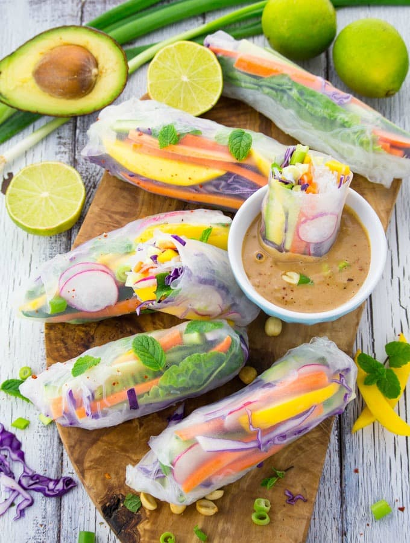

Rice Paper Rolls with Mango and Mint

Description
Homemade rice paper rolls, also called summer rolls, make such an awesome light dinner on hot summer days. Or of course you could also serve them the whole year round.
And they’re super easy to make! Plus, they’re also a wonderful appetizer for parties. I mean just look at that color!
Ingredients:
- 6 Vietnamese rice paper
- 1 avocado
- 1 cucumber
- 3 carrots
- 1 mango
- 3 green onions
- 1 cup purple cabbage
- 6 radishes cut into thin slices
- 1 cup fresh mint
- 2-3 cups lettuce, cut into thin stripes
- 1-1 1/2 glass noodles
- 1/4 cup chuncky peanut butter
- 2 teaspoons soy sauce
- 1 clove of garlic, minced
- 3-4 tablespoons warm water
- 1/2 teaspoons sriracha sauce
Steps
- Cut the avocado, the carrots, the mango, the lettuce, and the purple cabbage into thing stripes.
- Fill a shallow bowl with water and dip the rice papers in water so they get moderately wet on both sides. Don't let them soak too long, so they don't get too soft.
- When you soaked the rice papers, fill them with the veggies and the tofu (if using) and wrap them like a burrito. I think it's best to center the filling and then roll it up and fold in the two side flaps.
- Then make the peanut dipping sauce: In a medium bowl, combine the peanut butter with the soy sauce, the garlic, the warm water, and the sriracha sauce.
- Serve the rice paper rolls with the peanut dipping sauce.
Notes
- Make sure to cut up all of the vegetables first, so you have everything ready when you start dipping the rice paper into water.
- Don’t dip the rice paper for too long or they will become too soft, delicate, and hard to roll.